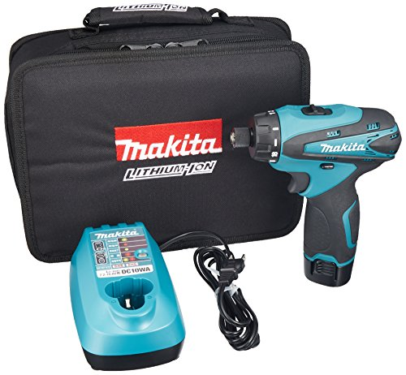
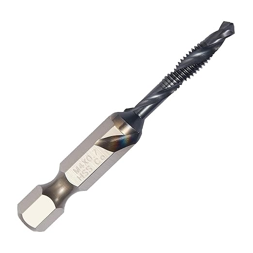
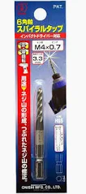
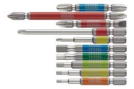
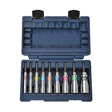
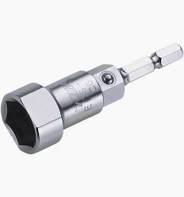
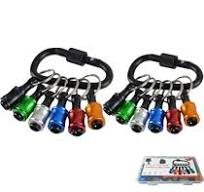
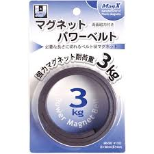

『マキタ 充電式ドライバドリル DF030DWSP』

軽さと扱いやすさを重視したい人向け
このドリルの特にいいところ
・最初の1台として選びやすく、現場でも出番が多いのが一番の強みです。
・軽くて取り回しが良く、狭い場所や細かい作業でもとても使いやすいです。
・軽くて疲れにくいので、長時間の作業でも助かります。
・初心者でも使いやすいので、最初の1台を探している人には特におすすめです。
軽くてコンパクトなので、天井作業や狭い場所での作業でもとても扱いやすいです。
長時間使っても疲れにくく、細かい作業が多い時に特に助かっています。
このドリルはビットタイプのキリやタップが使いやすいです。
通常のキリを使いたい場合は、別売りのチャックがあると便利です。
私はよく使う下穴の数だけチャックを付けっぱなしで持ち歩いています。
最初の1台なら、これを選んでおけばとても使いやすいです。
▶ 『DF030DWSP』の価格をAmazonでチェックするこんな人におすすめ
- 最初の1台を探している人
- 軽作業や細かい作業が多い人
一緒にあると便利なもの

私はよく使う下穴の数だけ付けっぱなしで持ち歩くのに便利だと感じています。

開孔・タップ・面取りが一体になっていて使いやすいです。

ビットタイプで使いやすく、細かいタップ作業に便利です。
現場でよく持ち歩くもの

よく使うビットをまとめて揃えたい時に便利です。

現場で使うソケットをまとめて持ちたい人向けです。

レースウェイ内の3分ナットを締めるのに使っています。

よく使うビットをまとめておけます。

マグネットはあったほうが便利で、作業場の4Sも維持しやすいです。